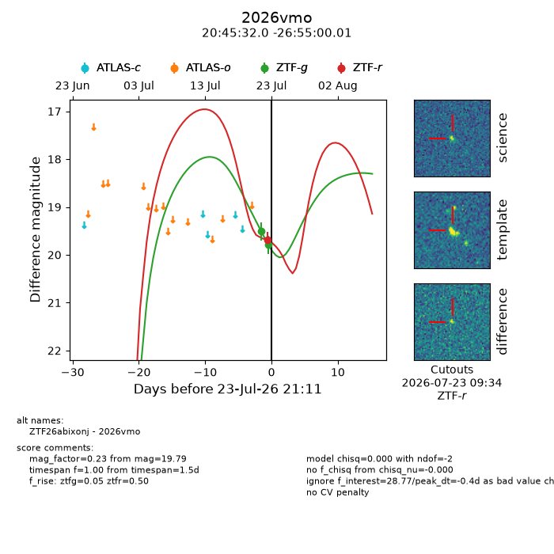
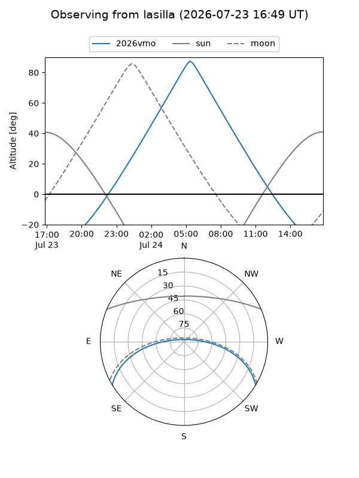
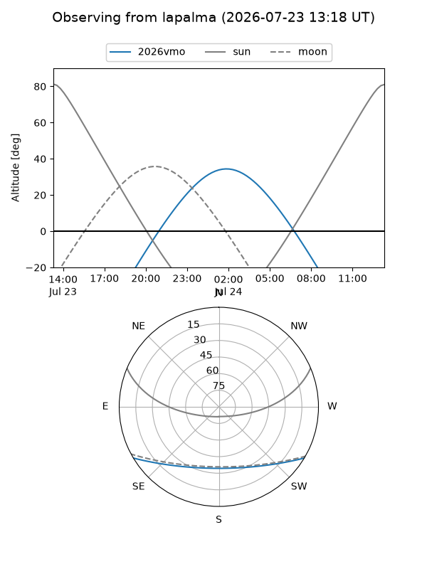
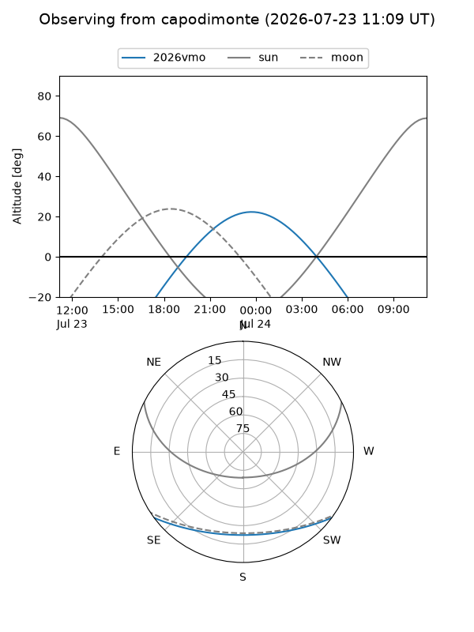
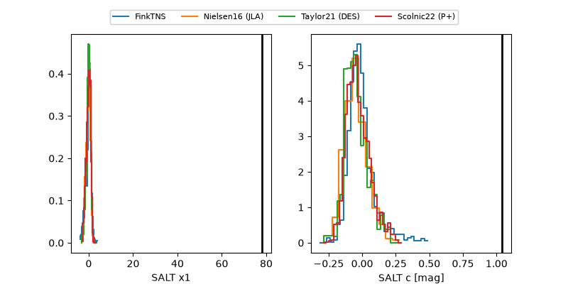

2026vmo
Target 2026vmo at 2026-07-23 21:14
Aliases and brokers:
FINK-ZTF: ztf.fink-portal.org/ZTF26abixonj
Lasair-ZTF: lasair-ztf.lsst.ac.uk/objects/ZTF26abixonj
ALeRCE-ZTF: alerce.online/object/ZTF26abixonj
YSE-PZ: ziggy.ucolick.org/yse/transient_detail/2026vmo
TNS name: wis-tns.org/object/2026vmo
Direct TNS query: direct search
alt names
ZTF26abixonj (ztf,fink_ztf)
2026vmo (tns,yse)
Coordinates:
equatorial (ra, dec) = 311.3834,-26.91667
equatorial (HMS+DMS) = 20:45:32.03,-26:55:00.01
galactic (l, b) = (18.0127,-35.82932)
Flags:
peak dt: -0.4
Photometry:
last ztfg=19.79, ztfr=19.69
2 ztfg, 1 ztfr detections
Lightcurve

Visibility



Additional plots
